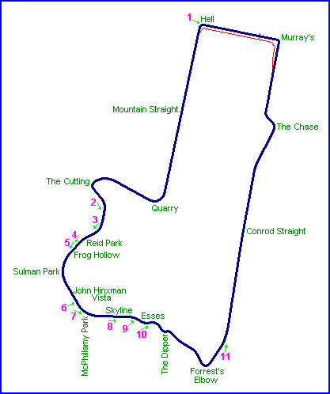
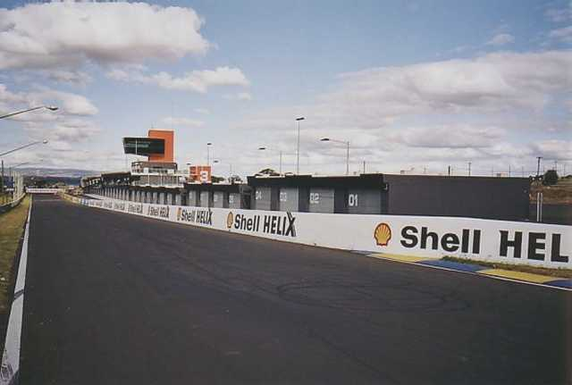
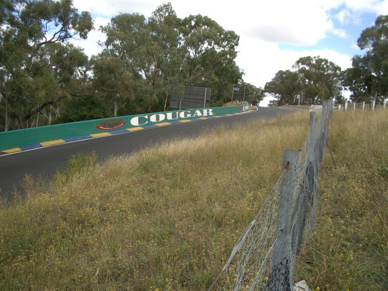
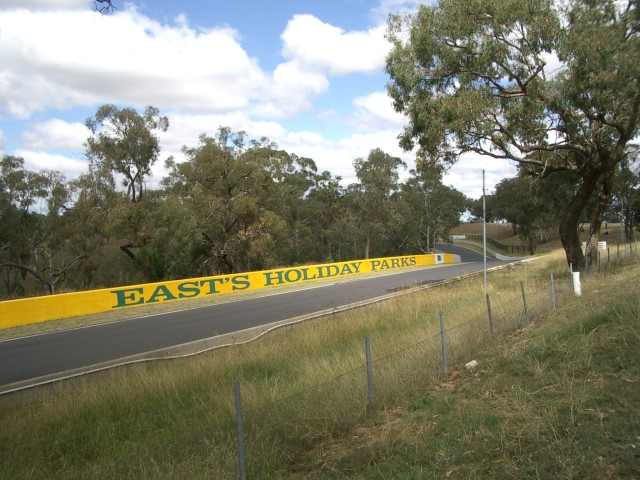
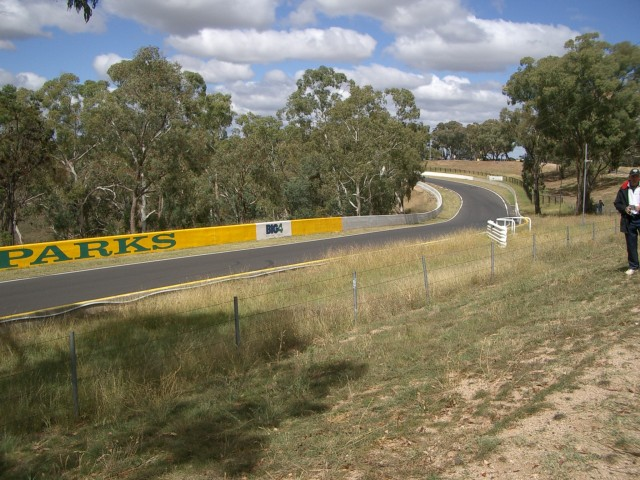
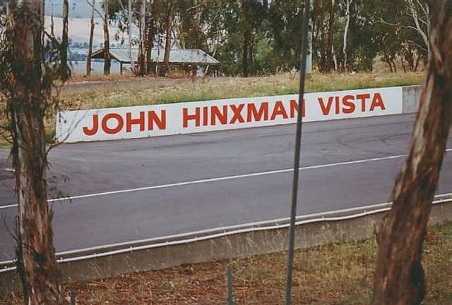

Mount Panorama - Hell Corner to John Hinxman Vista
|| Contents || Hell Cnr. to John Hinxman Vista | McPhillamy Pk to Conrod Str. || Home ||

Numbers on the map represent the location where the photographs were taken. Scroll
down to view the photographs.
Return to racingcircuits.net's
Photo Archive Main Index

1 - Looking back along Pit Straight from Hell Corner. These pit buildings
have been built since the last Bathurst 1000 (October 2004) with money provided by the
Bathurst Council, the NSW State Government and the Australian Federal Government.

2 - This gives an impression of the distance from Griffin's Mount to
Skyline. Zooming in presents a better view of
the secondary control tower at Skyline. The Mount Panorama sign on the hillside is
starting to look a bit overgrown. Either they are trying to lose it into the landscape or
it is overdue for some weedkiller.

3 - Click here to zoom

4 - Similar view to #5, but with a better impression of the dip at Frog
Hollow.

5 - As above, but including more of Sulman Park and showing the
relationship of the three.

6 - Shows the 'John Hinxman Vista' sign, with the lookout in the
background. This is just to prove that it is there. If you want a lookout, however,
Skyline is a better deal.
©2005 Mark Taylor & Ian Holden. Reproduced here with kind
permission.